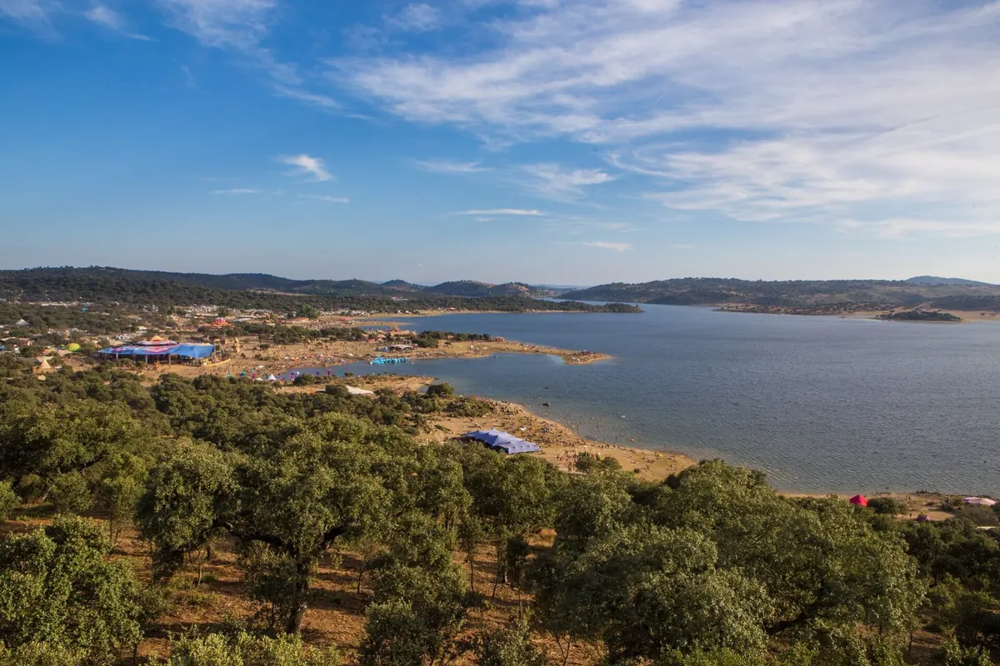
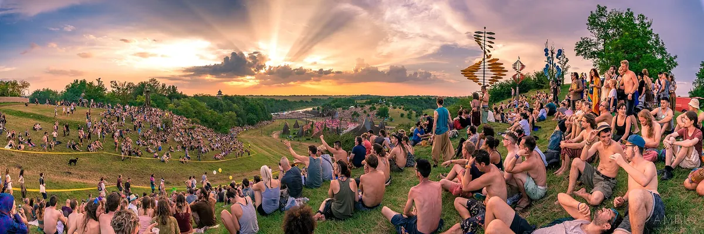
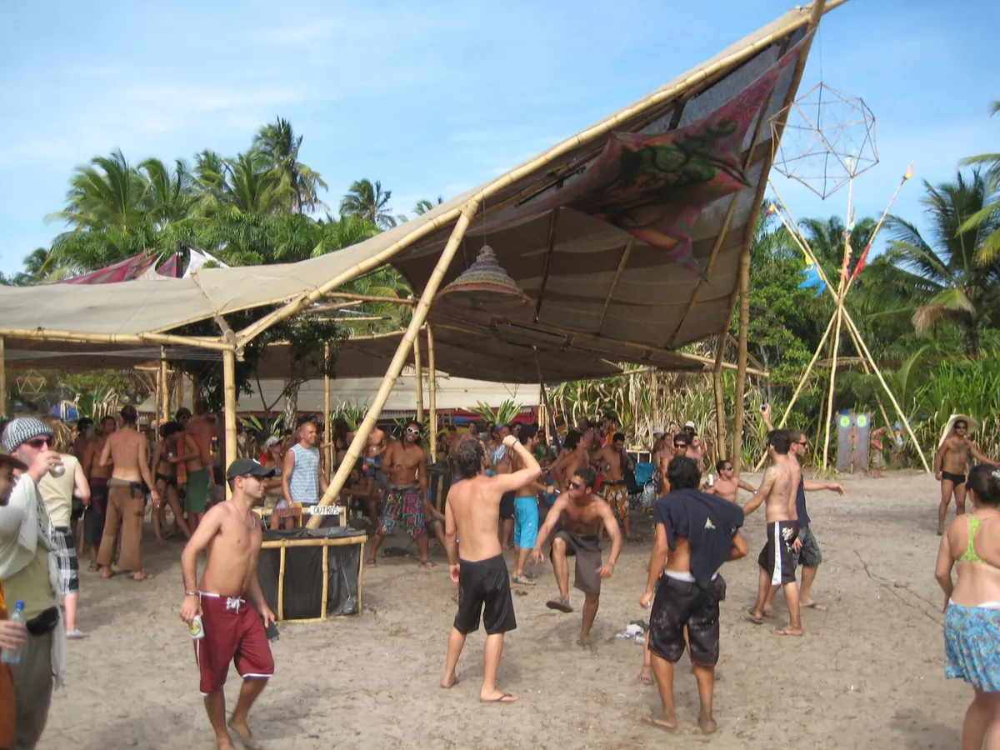
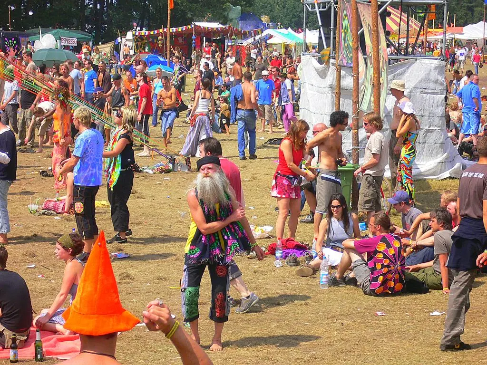
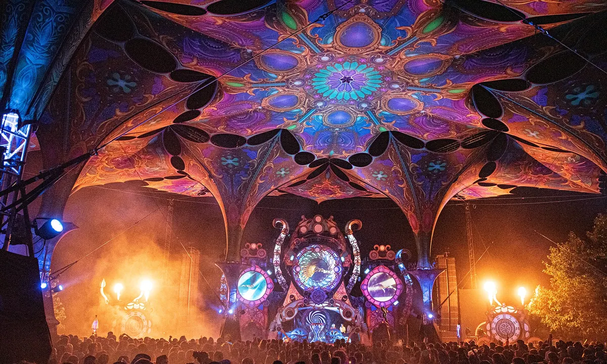
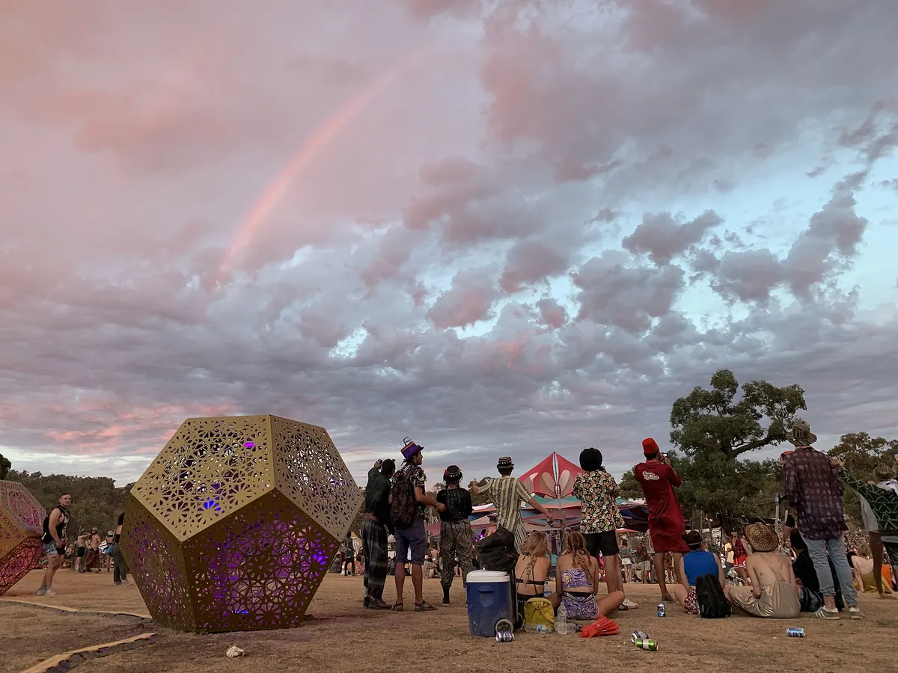

Festival guide, 2027
The best psytrance festivals in 2027
The main psytrance festivals compared by place, length and feel, from Boom and Ozora to the bush of central Victoria, with the 2027 dates that are confirmed and the ones that are not.
A list meant for choosing.
Boom in Portugal and Ozora in Hungary lead the psytrance calendar, and Universo Paralello on the coast of Brazil is the third great name. They are camping gatherings that last days, and the setting is half of the reason to go. This page compares the main festivals by place, length and feel, and shows which 2027 dates are confirmed. Use it to choose one. The listing sites are better for a calendar of every event.
How this list was chosen.
A festival is on this list when these three things are true:
- Psytrance is the core of the programme.
- It has run recently, and it has either published a 2027 edition or given no sign of stopping.
- It is one that people cross a border to attend, or the leading event in its region.
Most of these festivals do not appear in DJ Mag's Top 100 Festivals, so that poll is no use here. Few festivals publish attendance either, so figures appear below only where someone has reported them.
A date from the festival's own site is shown as confirmed. A date found only on a listing site is marked as listed, and should be treated as provisional until the festival publishes it.
Psytrance festival dates for 2027 at a glance.
Psytrance runs on a summer calendar in both hemispheres. Europe's biggest weeks fall between late June and early September, and in 2027 Ozora's listed dates overlap the end of Boom on 23 to 25 July.
| Festival | Where | 2027 dates | Setting | Length | Best for |
|---|---|---|---|---|---|
| Universo Paralello | Pratigi, Bahia, Brazil | Listed from 27 December 2026 | Beach | Over a week | New Year in the sun |
| Rainbow Spirit | Glenaroua, Victoria, Australia | 5 to 8 March | Bush | Four days | Australia’s main gathering |
| Burning Mountain | Zernez, Switzerland | 24 to 27 June | Alps, 1,500 m | Four days | A mountain setting |
| VooV | Putlitz, Germany | Listed 16 to 19 July | Countryside | Four days | A smaller German gathering |
| Boom | Idanha-a-Nova, Portugal | 18 to 25 July, sold out | Lake | Eight days | The widest programme |
| Ozora | Dádpuszta, Hungary | Listed 23 July to 3 August | Open hills | About twelve days | The long stay |
| Mo:Dem | Primišlje, Croatia | 2 to 8 August | River valley | Seven days | Darker sounds |
| Indian Spirit | Eldena, Germany | 25 to 30 August | Countryside | Six days | A large German gathering |
| Hadra | Allier, France | Not announced (27 to 30 August in 2026) | Lake | Four days | A French summer weekend |
| Own Spirit | Huesca, Spain | 1 to 6 September | Reservoir | Six days | The end of summer |
What is the biggest psytrance festival?
Boom is the biggest psytrance festival with a reported count. Lusa, the Portuguese news agency, reported 37,286 people of 162 nationalities in 2025, and the festival's own letter after the event says almost 45,000 from 165 countries. Ozora has published no official attendance, and reports put it at about 30,000.
Boom, Portugal
Boom is held at Boomland, on the shore of the lake at Idanha-a-Nova in the Castelo Branco district. The 2027 edition is on 18 to 25 July, and the festival is marking 30 years. It says it has sold out every year since 2014, and its 2027 tickets sold out in two hours in October 2026. It is as much an arts and sustainability gathering as a dance festival. Pick it if you want the largest crowd and the most to see away from the dancefloor.

Ozora, Hungary
Ozora Festival takes place at Dádpuszta, about 140 km southwest of Budapest. Its dates are listed as 23 July to 3 August 2027, though the organiser's dates should be checked before you book. The horizon of low hills around the site is a large part of its appeal, and the main stage structure is famous among regulars.

Universo Paralello, Brazil
Universo Paralello is the great southern-hemisphere New Year gathering, usually held every two years. The next edition is at Pratigi in Bahia, on the beach at Ituberá, about 290 km south of Salvador. Listings say it opens on 27 December 2026 and runs into the first days of January. The spelling trips people up: it is often written Parallelo, and the organiser writes Paralello, with the double l after the e.

Which are the best psytrance festivals in Europe?
Boom and Ozora lead the psytrance festivals Europe has to offer. After them come VooV and Indian Spirit in Germany, Hadra in France, Own Spirit in Spain, Mo:Dem in Croatia and Burning Mountain in Switzerland. Each is smaller and more specific than the two giants, which for many people is the appeal.
VooV, Germany
VooV is held at Putlitz in Brandenburg, northwest of Berlin. It is listed for 16 to 19 July 2027, so treat that as provisional. Those dates overlap the start of Boom by two days.

Hadra, France
Hadra Trance Festival held its 17th edition on 27 to 30 August 2026 at the Plan d'Eau de Vieure in the Allier, on a lake in central France. The 2027 dates have not been announced.

Own Spirit, Spain
Own Spirit has run since 2015 at the Santa Ana reservoir near Baldellou in Huesca. The 2027 edition is on 1 to 6 September.
Mo:Dem, Croatia
Mo:Dem is on 2 to 8 August 2027 at Primišlje in Kordun. It sits at the deeper, forest end of the sound, so it suits people who want something darker than the main-stage festivals.
Burning Mountain, Switzerland
Burning Mountain is on 24 to 27 June 2027 at Zernez in the Engadine, at 1,500 metres. It runs for four days and programmes progressive and psychedelic trance. It has the only true mountain setting here.
Indian Spirit, Germany
Indian Spirit is on 25 to 30 August 2027 at Eldena in northern Germany, and calls itself the country's biggest psytrance festival. It reported 25,000 fans from 67 countries in 2026.
Before you commit to a week of any of these, hear the sound: this is BLANKA for Boiler Room in Warsaw, filmed in 2026 at a club.
Are there psytrance festivals in the USA?
Yes, but the scene is small, and the psytrance festivals USA fans can reach are nothing like the scale of those above. Equinox was listed for a US teaser edition on 4 to 6 September 2026 at Texas Music River Ranch in Webberville, Texas, and no 2027 date has been published. Psytrance also appears inside bigger trance events. A State of Trance holds its first multi-day US festival on 11 and 12 June 2027 at Ace Mission in Los Angeles, with psytrance reported among the styles across its three stages. If you are based in the US and want the real thing, fly to Europe, or look at the best EDM festivals in the US for trance at Dreamstate.
Where are the best psytrance festivals in Australia?
Victoria is the centre of Australian psytrance festivals, and the two names to know are Rainbow Spirit and Wild Horses. Both are bush gatherings, and Australians call this kind of event a doof.
Rainbow Spirit, Victoria
Rainbow Spirit is the festival previously known as Rainbow Serpent, renamed and now at Glenaroua in central Victoria, about 90 minutes north of Melbourne. The 2027 edition is on 5 to 8 March, and the 2026 edition sold out.

Wild Horses, Victoria
Wild Horses is a limited-capacity bush doof at Carapooee West in the Victorian wheatbelt, northwest of Bendigo, and it leans towards trance and psytrance. The 2026 edition, its tenth, runs on 13 to 16 November, and a 2027 date has not been announced.
For wider Australian listings, see the best EDM festivals in Australia.
Not on this list, and why.
- Shankra, Switzerland. It is a well-known name, but it was called off at Lostallo for the third year running in 2026, and no 2027 edition has been published.
- Burning Man. It has psytrance camps, but Burning Man has no central programme, so it does not pass the first test.
- Tomorrowland and other big-stage festivals. Some book psytrance acts, and it is never the core.
How to choose.
Start with how long you want to be away. Boom and Ozora are a week or more, and the smaller European festivals run from four to seven days. Then think about the setting: a lake at Boom and Hadra, open hills at Ozora, a beach at Universo Paralello, the Alps at Burning Mountain.
If you want one first psytrance festival in 2027, look at Ozora first, because Boom's 2027 tickets have sold out. Buy early, as Ozora's tickets can also go ahead of the festival. If you want the widest programme beyond the music, aim for Boom's next edition.
All these festivals involve camping and long days in the sun, so check the festival's own rules on water, shade and camping before you travel. Check dates too, because several above are listed and not yet confirmed.
Psytrance festivals FAQ.
Is Boom Festival every year?
No. Boom normally runs every two years, so after the 2023 and 2025 editions the next is 18 to 25 July 2027, at Idanha-a-Nova in Portugal.
What is a psy trance festival?
It is an outdoor gathering built around psychedelic trance, usually held over several days with camping on site. Music runs for most of the day and night, and art, healing areas, workshops and markets sit around the dancefloors. Boom, Ozora and Universo Paralello are the best-known examples.
When is Ozora Festival in 2027?
Ozora Festival in 2027 is listed for 23 July to 3 August at Dádpuszta in Hungary. That date comes from listings, so check it with the organiser before you book.
Sources.
- 2027 dates from each festival's own site: Boom, Burning Mountain, Own Spirit, Indian Spirit and Mo:Dem; Rainbow Spirit from its ticketing page.
- Boom tickets: Boom, 13 October 2026.
- Listed dates: Technoairlines (VooV, Ozora), Techno Univers and Shotgun (Universo Paralello).
- Boom attendance: Lusa via Notícias ao Minuto, 24 July 2025, and Boom's letter after the 2025 edition.
- Ozora attendance: XpatLoop.
- Indian Spirit attendance: Grateful Web.
- Shankra: Südostschweiz and RSI, June 2026.
- Wild Horses: Beat. Hadra: the festival's own site.
- A State of Trance US festival: Insomniac and EDM.com. Equinox Teaser USA: Bandsintown.
Continue reading
Read next.
 Festivals~13 min read
Festivals~13 min readWhat Is Burning Man? The Event, the City and the Music
A participant-built city in the Nevada desert, with no central lineup or main stage, and the sound camps and art cars that programme their own music.
Read article → Rave spots~10 min read
Rave spots~10 min readBest Clubs in Berlin: The Legends and the Ones Still Open
The rooms that made Berlin a techno city, the famous clubs that closed, and the best clubs in Berlin that are still open.
Read article → Rave spots~8 min read
Rave spots~8 min readBerghain: Panorama Bar, Sound and Residents
Berghain explained: the former power station, Panorama Bar upstairs, Halle am Berghain, the Kantine, and the Ostgut Ton label.
Read article → Rave spots~6 min read
Rave spots~6 min readBest Clubs in Paris: From Le Palace to Rex Club
Le Palace, Les Bains Douches and Rex Club: the clubs that made Paris nightlife, how each became famous, and the best clubs in Paris open now.
Read article →